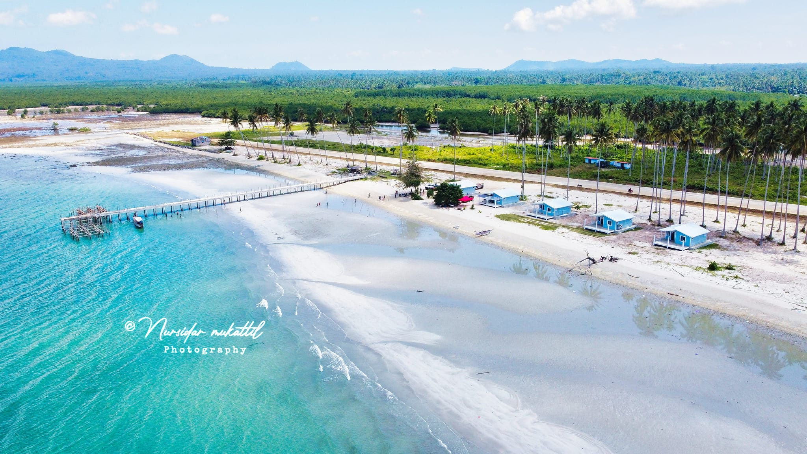

Top Tourist Destinations
Beautiful Beach
Experience the pristine sands and crystal-clear waters of our beautiful beach.
Historic Fort

Visit the historic fort, a landmark that offers a glimpse into our rich history.
Experience the pristine sands and crystal-clear waters of our beautiful beach.
Visit the historic fort, a landmark that offers a glimpse into our rich history.